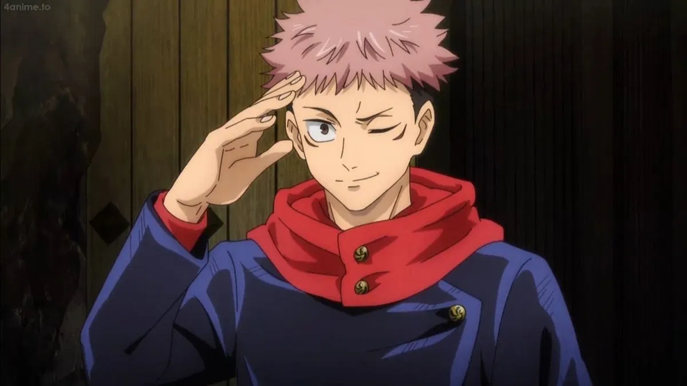
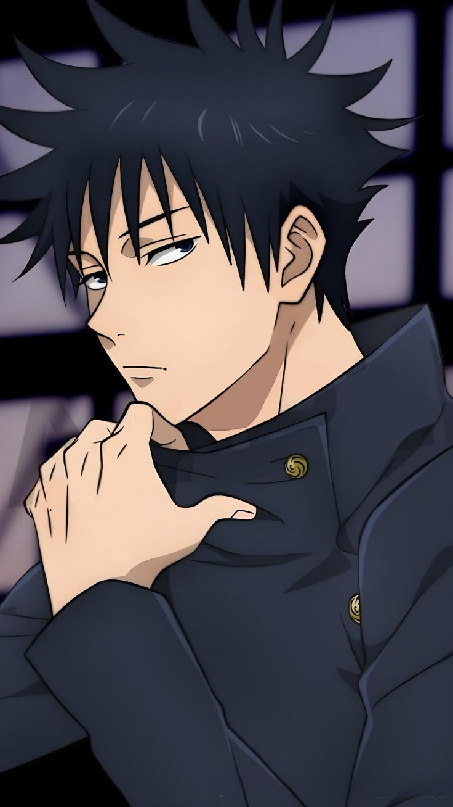
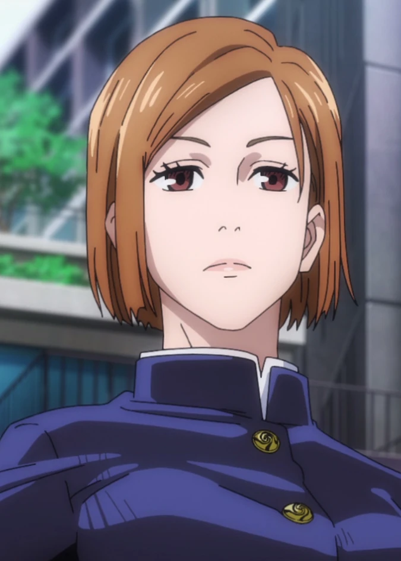

Yuji Itadori (虎杖悠仁 Itadori Yūji) es el protagonista de la serie manga Jujutsu Kaisen. Es un estudiante de primer año del Colegio Técnico de Magia Metropolitana de Tokio y recipiente del Rey de las Maldiciones, Sukuna.

Yuji Itadori
Megumi Fushiguro
Megumi Fushiguro (伏黒恵 Fushiguro Megumi) es uno de los protagonistas de la serie manga Jujutsu Kaisen. Es un estudiante de primer año del Colegio Técnico de Magia Metropolitana de Tokio, y compañero de Yuji Itadori y Nobara Kugisaki.

Megumi Fushiguro
Nobara Kugisaki
Nobara Kugisaki (釘崎野薔薇 Kugisaki Nobara) es una de los protagonistas de la serie manga Jujutsu Kaisen. Es una estudiante de primer año del Colegio Técnico de Magia Metropolitana de Tokio, y compañera de Yuji Itadori y Megumi Fushiguro.

Nobara Kugisaki
Satoru Gojo
Satoru Gojo (五条悟 Gojō Satoru) es uno de los personajes de la serie manga Tokyo Metropolitan Curse Technical School y uno de los protagonistas de la serie secuela, Jujutsu Kaisen. Conocido con el apodo de El Chamán Más Fuerte (最強の呪術師 Saikyō no Jujutsu-shi), es uno de los cuatro chamanes de Clase Especial, antiguo compañero de Suguru Geto y Shoko Ieiri, y actual profesor del Colegio Técnico de Magia Metropolitana de Tokio, encargado de los alumnos de primer año.Satoru Gojo
Sukuna
Ryomen Sukuna (両面宿儺 Ryōmen Sukuna) (lit. Sukuna de la Doble Cara), más comúnmente conocido como Sukuna (宿儺 Sukuna) es el antagonista principal de la serie manga Jujutsu Kaisen. Apodado Rey de las Maldiciones (呪いの王 Noroi no Ō), fue el chamán más fuerte de hace mil años y actualmente una encarnación de objetos malditos de grado especial.